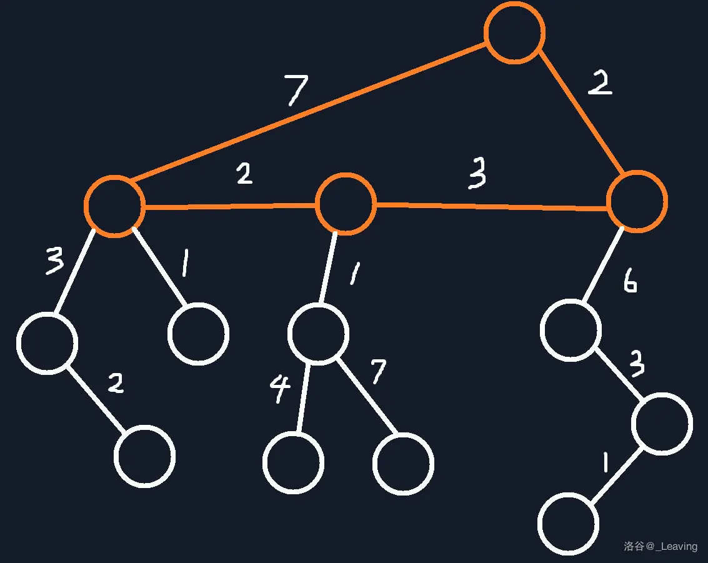
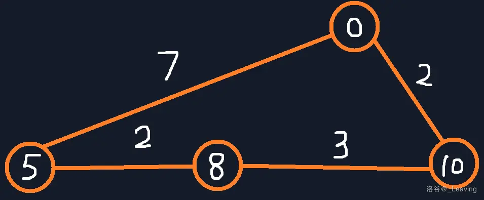

树上启发式合并
暴力合并,复杂度能过,所以是”启发式”,按照size合并的.
例题
春节十二响: 给一颗树,每一个点有一个权值,点能放在一个块当且仅当点之间不具有父子节点关系,一个块的值被定义成块里所有点权值的最大值,求一棵树的最小块的值和.
启发式合并:首先考虑一个三节点二叉树:根节点必定是一个,然后两个叶节点放一起.然后是一个两端都是链的二叉树,这个时候每条链上肯定不会在一起,就和另一条链合并,同时为了让块最小肯定是每次取两条链最大的节点合并.
然后发现我们得到了一条新的链,于是启发式合并的思路就出来了:如果一棵树有两个及以上的链,每次取最大的节点合并成一条链即可.
树上差分(点)
和树上前缀和差不多?用 dat[i] 表示从根到i的路径上的所有数据的和,然后求 u,v 上的数据就是
树上差分就是,比如路径uv上所有点加1,那就是1
2
3
4dat[u]++;
dat[v]++;
dat[lca(u,v)]--;
dat[fa(lca(u,v))]--;
然后利用回溯法求出前缀和(此时dat代表子树的数据,不是根到节点的数据).
树上差分(边)
边权转换为点权很简单就是两个点直接连接的边的权放在深度更高的那个点的位置就行了.这个时候就是1
2
3dat[u]++;
dat[v]--;
dat[lca(u,v)]-=2;
两个点之间查询也要减掉1遍的lca,因为这个存的是子树…
树剖
处理u到v的最短路径
id就是dfn.1
2
3
4
5
6
7
8
9
10
11
12
13
14
15
16
17inline int qRange(int x,int y){
int ans=0;
while(top[x]!=top[y]){//当两个点不在同一条链上
if(dep[top[x]]<dep[top[y]])swap(x,y);//把x点改为所在链顶端的深度更深的那个点
res=0;
query(1,1,n,id[top[x]],id[x]);//ans加上x点到x所在链顶端 这一段区间的点权和
ans+=res;
ans%=mod;//按题意取模
x=fa[top[x]];//把x跳到x所在链顶端的那个点的上面一个点
}
//直到两个点处于一条链上
if(dep[x]>dep[y])swap(x,y);//把x点深度更深的那个点
res=0;
query(1,1,n,id[x],id[y]);//这时再加上此时两个点的区间和即可
ans+=res;
return ans%mod;
}
处理rt为根的子树
结论:树rt的子树的区间是 [dfn[n],dfn[n]+siz[n]-1] .
所以这玩意比两个点还好改.1
2
3void cchangesub(int rt){
return cchange(1,1,n,dfn[rt],dfn[rt]+siz[rt]-1);
}
处理边权
边权默认放在深度更高的节点的位置即可.然后修改就正常修改,最后减掉一倍LCA的边权即可.(查询也一样)
参考代码如下(树剖本身和线段树没太大关系,树剖只是把树拍扁了,数据结构是线段树维护的)1
2
3
4
5
6
7
8
9
10void change(int x,int y){
while(t0p[x]!=t0p[y]){
if(dep[t0p[x]]<dep[t0p[y]])swap(x,y);
aadd(1,1,n,dfn[t0p[x]],dfn[x],1);
x=_fa[t0p[x]];
}
if(dep[x]>dep[y])swap(x,y);
aadd(1,1,n,dfn[x],dfn[y],1);
aadd(1,1,n,dfn[x],dfn[x],-1);
}
求LCA
1 | int lca(int u,int v){ |
例题
猫猫与自动售货机,给一个无向图,每个点有点权x,每次有如下操作:
1 x:点x权值-1(保证不会出现负权).2 x:查询所有点的点权乘到x的距离的和.对于距离有以下公式:
于是记所有点权集合为 $S$ ,有
考虑如何维护第三项:计算LCA深度的时候,可以让根到k的所有节点权值+1,其余节点是0,则x到根的所有权值之和就是LCA的深度.同时发现只有k是变化的,则可叠加起来.
基环树
只有一个环的树(n个点n条边的图),有的时候题干会给一个基环树森林(好多个基环树).
基环树给的方式是每一个点向外有一条边相连.
看这个讲的很好!
找环两点
可以用并查集维护,当两个点在没加边之前就在一个联通块那就是两个点.
找环
设 a[i] 表示一个点的边,使用两遍dfs解决,复杂度O(n):1
2
3
4
5
6
7
8
9
10
11
12
13
14
15
16
17
18
19
20
21
22
23
24
25
26
27
28
29
30
31int vis[N];//0未访问1访问过2正在访问3在环上
vector<int>cycles;//环大小数组
int cyclecnt=0;//有多少个环
void dfs2(int u){
cycles[cyclecnt]++;//环大小++
vis[u]=3;//在环上
if(vis[a[u]]==3)return;
dfs2(a[u]);
}
void dfs(int u){
vis[u]=2;
if(vis[a[u]]==0){
dfs(a[u]);//dfs找环
}else if(vis[a[u]]==1){
vis[u]=1;
return;
}else{//2
cycles.pb(0);//找到了环
dfs2(u);
cyclecnt++;
}
vis[u]=1;
}
int main(){
for(int i=1;i<=n;i++){
if(vis[i]==0){
dfs(i);
}
}
}
做法
基环树只会让题变复杂,但是不会变得特别复杂.
- 拆环变成树,然后再考虑环对答案的影响.
- 把环抽出来,变成一棵树之后计算,然后合并答案.
强制某点不选
可以赋值为 -inf 再跑一遍.
基环树直径
基环树直径的定义是指基环树上任意两点之间的最大距离.
首先把子树取最大值,这就是一个简单的树上dp.
然后剩下一个环,环上有点权和边权,寻找最大的uv.
现在问题变成了:给一个环,环有边权和点权,你要找到最大的两个点 $u,v$ 满足 $w_u+w_v+\mathrm{dis}(u,v)$ 也就是路径和点权和最大:
断环成链,然后跑滑动窗口.如图:


具体地:维护一个单调队列,到一个新节点入队,然后把过期的或者不是最大的队尾出队,然后取最大值.
例题
以洛谷P4381为例:给一个基环树森林,你要求出所有基环树的直径和(有点难调,我觉得是高位蓝)
常见错误:
- 基环树的直径不一定经过环
- 子树DP写挂了(记录d1表示最长链,d2表示次长链,然后dp一下)
- 不开
long long - 滑动窗口写挂了
1
2
3
4
5
6
7
8
9
10
11
12
13
14
15
16
17
18
19
20
21
22
23
24
25
26
27
28
29
30
31
32
33
34
35
36
37
38
39
40
41
42
43
44
45
46
47
48
49
50
51
52
53
54
55
56
57
58
59
60
61
62
63
64
65
66
67
68
69
70
71
72
73
74
75
76
77
78
79
80
81
82
83
84
85
86
87
88
89
90
91
92
93
94
95
96
97
98
99
100
101
102
103
104
105
106
107
108
109
110
111
112
113
114
115
116
117
118
119
120
121
using namespace std;
int a[1000010];
long long l[1000010];
int cyc[1000010],top=0;
char vis[1000010];
vector<int>edge[1000010];
void dfs(int num){
vis[num]=2;
if(vis[a[num]]==0){
dfs(a[num]);
}else if(vis[a[num]]==2){
cyc[++top]=num;
}
vis[num]=1;
}
long long e[3000010];
long long w[3000010];
int tmp[1000010],rng=0;
long long d1[1000010],d2[1000010];
long long ct;
long long dfs2(int num,int ko1,int ko2){
d1[num]=0,d2[num]=0;
for(auto i:edge[num]){
if(i==ko1||i==ko2)continue;
auto j=dfs2(i,num,-1);
if(d1[num]<j){
d2[num]=d1[num];
d1[num]=j;
}else if(d2[num]<j){
d2[num]=j;
}
}
ct=max(ct,d1[num]+d2[num]);
return d1[num]+l[num];
}
long long n,m,res;
void calc(int pos){
ct=0;
rng=0;
long long rres=0;
while(1){
vis[pos]=2;
tmp[++rng]=pos;
w[rng]=0;
e[rng]=l[pos];
pos=a[pos];
if(vis[pos]==2)break;
}
for(int i=1;i<=rng;++i){
int ko1=0,ko2=0;
for(auto j:edge[tmp[i]]){
if(vis[j]==2){
if(ko1==0){
ko1=j;
}else{
ko2=j;
break;
}
}
}
w[i]=dfs2(tmp[i],ko1,ko2)-l[tmp[i]];
rres=max(rres,ct);
}
for(int i=1;i<=rng;++i){
e[i+rng]=e[i];
w[i+rng]=w[i];
}
deque<pair<int,long long> >q;
for(int i=rng*2-1;i>0;--i){
e[i]+=e[i+1];
}
q.push_back({1,e[1]+w[1]});//队尾
for(int i=2;i<=rng*2;++i){
while(!q.empty()){
auto k=q.front();
if(k.first<=(i-rng)){//弹掉老的
q.pop_front();
}else{
break;
}
}
rres=max(rres,q.front().second+w[i]-e[i]);//更新答案
while(!q.empty()){
auto k=q.back();
if(k.second<=(e[i]+w[i])){//弹掉小的
q.pop_back();
}else{
break;
}
}
q.push_back({i,e[i]+w[i]});
}
res+=rres;
}
int main(){
cin>>n;
for(int i=1;i<=n;++i){
cin>>a[i]>>l[i];
edge[i].push_back(a[i]);
edge[a[i]].push_back(i);
}
for(int i=1;i<=n;++i){
if(vis[i]==0){
dfs(i);
}
}
memset(vis,0,sizeof(vis));
for(int i=1;i<=top;++i){
calc(cyc[i]);
}
cout<<res;
return 0;
}
动态树(LCT,Link-Cut Tree)
动态树板子:维护森林,加边,删边,维护x到y简单路径上的半群运算(不需要逆元,不需要差分),也就是树状数组不能维护的信息LCT可以,比如区间max.
LCT是直接对森林维护的,数组大小和点数一样即可.
实际上感觉LCT和树剖一样,都是想办法让区间连续起来,然后使用一个类似线段树懒标记的方法去维护.
近乎裸LCT 洛谷P3203
首先,一个点和他能到达的点连边,每个点点权设为1求路径和即可.
由于lct的特殊性质,查询其他节点时,父节点可能会被旋下去,所以一定要找一个极大值 $(n+1)$ 表示所有点到达这里的路径是多少,同时这个点不变,就不会被旋下去,维持了性质.(不然会WA)
裸的LCT 洛谷板子题
加边删边维护路径抑或和.
板子题,无需多言,直接维护即可,代码如下:1
2
3
4
5
6
7
8
9
10
11
12
13
14
15
16
17
18
19
20
21
22struct node{
int f,ls,rs,val,sum,lz;
} s[100005];
void pushup(int k){
s[k].sum=s[s[k].ls].sum^s[s[k].rs].sum^s[k].val;
}//注意这里直接维护抑或和即可,意思是从根节点到达这里的路径抑或和.
void pushdown(int k){
if(s[k].lz){
swap(s[k].ls,s[k].rs);
if(s[k].ls) s[s[k].ls].lz^=1;
if(s[k].rs) s[s[k].rs].lz^=1;
s[k].lz=0;
}
}
i64 qquery(int x,int y){
split(x,y);
return s[y].sum;
}
void cchange(int x,int y){
splay(x);
s[x].val=y;
}
LCT懒标记 洛谷P1501
模拟线段树的过程,直接维护即可.注意到区间加要乘size,维护一下左孩子和右孩子的size即可.1
2
3
4
5
6
7
8
9
10
11
12
13
14
15
16
17
18
19
20
21
22
23
24
25
26
27
28
29
30
31
32
33
34
35
36
37
38
39
40
41void mmullazy(int x,i64 val){
s[x].val=(s[x].val*val)%mod;
s[x].sum=(s[x].sum*val)%mod;
s[x].mul=(s[x].mul*val)%mod;
s[x].add=(s[x].add*val)%mod;
}
void aaddlazy(int x,i64 val){
s[x].val=(s[x].val+val)%mod;
s[x].add=(s[x].add+val)%mod;
s[x].sum=(s[x].sum+val*(s[x].siz))%mod;
}
void pushup(int k){
s[k].sum=(s[s[k].ls].sum+s[s[k].rs].sum+s[k].val)%mod;
s[k].siz=s[s[k].ls].siz+s[s[k].rs].siz+1;
}
void pushdown(int k){
if(s[k].mul!=1){
mmullazy(s[k].ls,s[k].mul);
mmullazy(s[k].rs,s[k].mul);
s[k].mul=1;
}
if(s[k].add!=0){
aaddlazy(s[k].ls,s[k].add);
aaddlazy(s[k].rs,s[k].add);
s[k].add=0;
}
if(s[k].lz){
swap(s[k].ls,s[k].rs);
if(s[k].ls) s[s[k].ls].lz^=1;
if(s[k].rs) s[s[k].rs].lz^=1;
s[k].lz=0;
}
}
void aadd(int x,int y,i64 val){
split(x,y);
aaddlazy(y,val);
}
void mmul(int x,int y,i64 val){
split(x,y);
mmullazy(y,val);
}
珂朵莉树
珂朵莉树其实不是树,是一种算法…用于求 数据随机 区间推平 的任何O(n)能解决的暴力问题,写法简单粗暴,注意珂朵莉树的复杂度就是源于期望的推平复杂度是O(nloglogn),所以可以被卡,适用条件有点苛刻.
左偏树
核心代码是merge,作用是合并两颗左偏树,返回新的左偏树的根节点.
注意merge操作和并查集 没有任何关系 ,只和当前节点的左右孩子有关系,所以一般并查集作为辅助检查元素在哪个可并堆中.
变式:假如说要对某棵左偏树根节点做一些修改,要先合并左右孩子,然后 孤立根节点 ,然后可以任意修改根节点的值,然后再把新的根节点合并到左右孩子的左偏树中.
假如说要删除某个元素,使用并查集和vis(记录该节点是否被删)和id(当前节点的编号)维护一下就可以了.
一般的左偏树板子都会在merge的时候判断节点是不是0,孩子有没有0,且0节点默认不可被合并.
也就是说想从空树开始合并一个左偏树直接合并即可,不需要任何判断,pop也是一样,当前节点左偏树为空的时候直接pop不会报错,而是返回0.(左偏树板子比想象中要耐草,呃我是说鲁棒性)